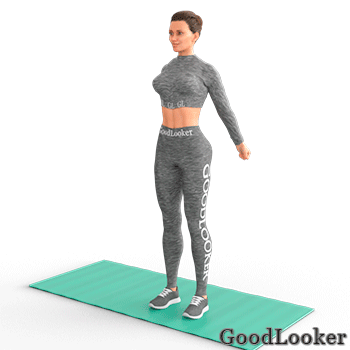
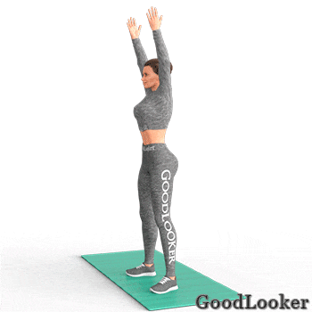

Этап 1: Ходьба на месте
1. Ходьба с подъемом колен
По 10 подъемов колен на каждую ногу.
2. Подъем рук и колен
По 10 подъемов колен на каждую ногу.
Этап 2: Суставная гимнастика
1. Повороты головы
По 5 поворотов в каждую сторону.
2. Вращение плечами

По 5 повторений в каждую сторону (по и против часовой стрелки).
3. Вращение локтями

По 5 повторений в каждую сторону (по и против часовой стрелки).
4. Вращение руками

По 5 повторений в каждую сторону (по и против часовой стрелки).
5. Вращение запястьями

По 5 повторений в каждую сторону (по и против часовой стрелки).
6. Вращение тазом
По 5 повторений в каждую сторону (по и против часовой стрелки).
7. Вращение ногами

По 5 повторений в каждую сторону (по и против часовой стрелки) на правую и левую ногу.
8. Вращение коленями

По 5 повторений в каждую сторону (по и против часовой стрелки).
9. Вращения стопой

По 5 повторений в каждую сторону (по и против часовой стрелки) на правую и левую ногу.
Этап 3: Динамическая растяжка мышц
1. Разведение рук для плеч, спины и груди

10 повторений.
2. Разведение локтей для дельт и плечевых суставов

10 повторений.
3. Сгибание рук для бицепсов и трицепса
10 повторений.
4. Повороты для пресса и косых мышц

По 5 повторений в каждую сторону.
5. Наклоны в сторону для пресса и косых мышц

По 5 повторений в каждую сторону.
6. Выгибания для спины и позвоночника

7 повторений.
7. Наклон в приседе для спины и плеч

По 5 повторений в каждую сторону.
8. Наклоны к полу с разворотом

По 5 повторений в каждую сторону.
9. Приседания с подъемом рук
10 приседаний.
10. Боковые выпады для разминки ног

По 5 повторений в каждую сторону.
11. Выпады для разминки ног
По 5 повторений в каждую сторону.
12. Наклоны для задней поверхности бедра

По 5 повторений в каждую сторону.
13. Подъемы ног вперед для растяжки ягодиц

По 5 повторений в каждую сторону.
14. Подъемы ног для растяжки квадрицепса

По 5 повторений в каждую сторону.
Этап 4: Кардио-разогрев
1. Бег на месте с захлестом голени

По 15 подъемом ног в каждую сторону.
2. Прыжки через скакалку

30 прыжков.
3. Прыжки с разведением рук и ног

30 прыжков.